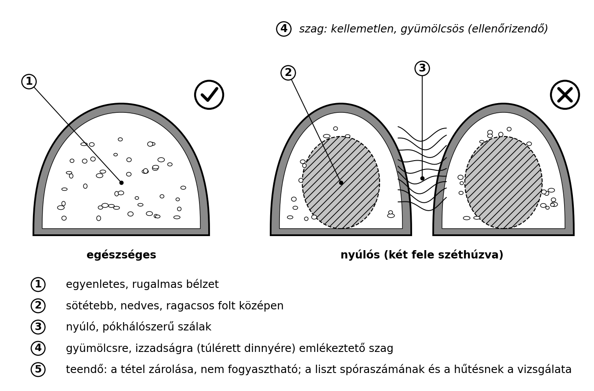

A liszt nem steril anyag. A gabonaszem felületéről, a malom levegőjéből és a szállítás során mikroorganizmusok milliói kerülnek a lisztbe. Száraz állapotban ezek a mikrobák túlnyomórészt szunnyadnak, de amint a liszt vizet, meleget és tápanyagot kap – például a dagasztás vagy a nedves tárolás során –, szaporodni kezdhetnek. A péknek ezért nemcsak a liszt fehérje- és keményítőtartalmát kell ismernie, hanem azt is, milyen mikrobák lehetnek jelen, milyen hibákat okozhatnak, és mikor kell a lisztet félretenni vagy reklamálni.
Egy hajnali műszakban a pék felnyit egy éppen beérkezett liszteszsákot. A liszt színe egyenletes, de a szagánál megáll: enyhén dohos, pincefalakra emlékeztető illatot érez. A zsák sarka nedves, a liszt ott csomós. A péknek döntenie kell: felhasználhatja-e a tételt, vagy félre kell tennie? Ha rosszul dönt, az egész napi tészta ragacsossá válhat, a kenyér pedig penésztoxint tartalmazhat. Ezért ebben az alfejezetben a liszt mikroflóráját, a leggyakoribb liszthibákat és a lisztromlás jeleit tanuljuk meg úgy, hogy a döntés biztonságos és szakszerű legyen.
Képzeld el a gabonaszemet, ahogy a szántóföldről a malomba kerül. A szem felszínén talajból, porból, növényi maradványokból származó baktériumok, penészgombák és élesztők tapadnak meg. Az őrlés során a szem felszíni rétegei, a korpa és az aleuronréteg a lisztbe keverednek. Így a mikrobák jelentős része átkerül a lisztbe. A liszt vízaktivitása () jellemzően 0,6–0,7 körül van, ami alacsony; ezen a szárazságon a legtöbb mikroba nem szaporodik, csak spóra vagy nyugalmi alak formájában túlél. Amint a liszt nedvességet kap – a tészta dagasztásakor, a raktárban beázáskor vagy a páralecsapódáskor –, a mikrobák szaporodásnak indulnak.
Definíció. A liszt mikroflórája a lisztben természetesen jelen lévő mikroorganizmusok – baktériumok, penészgombák, élesztőgombák – összessége. A mikroflóra fajösszetétele és csíraszáma függ a gabona termesztési, szárítási és tárolási körülményeitől, valamint az őrlés tisztaságától.
A lisztben leggyakrabban előforduló mikroorganizmusok:
| Csoport | Jellemző képviselők | Szerepük a sütőiparban |
|---|---|---|
| Spórás baktériumok | Bacillus subtilis, Bacillus licheniformis | Spóráik a sütést túlélik; meleg, nedves kenyérbélben kicsírázhatnak, és nyúlósodást (rope) okozhatnak. A Bacillus cereus toxint is termelhet: a nyúlós kenyér nem csupán minőségi hiba, egészségre ártalmas is lehet, ezért nem fogyasztható |
| Tejsavbaktériumok | Lactobacillus fajok | Kis számban lehetnek jelen; a kovászban szaporodnak, és savanyítással gátolják a romlást |
| Penészgombák | Aspergillus, Penicillium, Fusarium fajok | Nedves tárolásnál elszaporodnak; egyes fajaik mikotoxint termelhetnek |
| Élesztőgombák | vadélesztők, Saccharomyces fajok | Kis számban vannak jelen; a tészta kelesztésében csak a hozzáadott sütőélesztő a meghatározó |
| Anyarozs | Claviceps purpurea (rozs, ritkábban búza) | Szkleróciumai ergot-alkaloidokat tartalmaznak; uniós határértékkel szabályozott (ellenőrizendő: (EU) 2023/915), a malmi tisztítás csökkenti |
A lisztben a csíraszám jellemzően – telepképző egység/gramm (CFU/g) nagyságrendű, de ez erősen függ a tétel minőségétől; ezt tanulási példaként kezeld (ellenőrizendő: az adott liszt vizsgálati bizonyítványa, beszállítói specifikáció). A penészgomba- és élesztőszám általában alacsonyabb, de magas értéke romlásra vagy helytelen tárolásra utal.
Megjegyzés. A liszt önállóan ritkán okoz közvetlen fertőzést, mert száraz és sütés előtt nem kedvez a kórokozók szaporodásának. A veszély akkor nő meg, ha a lisztet nedvesen, melegen, hosszú ideig tárolják, vagy ha a késztermék hűtése nem megfelelő.
A lisztben jelen lévő Bacillus fajok spórákat képeznek. A spóra a baktérium túlélő alakja: ellenáll a hőnek, a szárazságnak és a vegyszerek egy részének. Amikor a kenyeret megsütjük, a bélzet maghőmérséklete 96–98 °C körüli, ami elpusztítja a vegetatív sejteket, de nem pusztítja el a hőálló spórákat. Ha a kenyér sütés után lassan hűl le, és a bélzet hőmérséklete hosszú ideig 30–45 °C között marad, a spórák kicsírázhatnak, és a baktériumok szaporodni kezdenek.
Definíció. A nyúlósodás (rope) a kenyérbél mikrobiológiai romlása, amelyet spórás baktériumok okoznak. A kenyérbél szürkés, nyúlós, ragacsos, a morzsa összeáll, és gyümölcsre vagy izzadságra emlékeztető, kellemetlen szagot kap. Ez a kenyér emberi fogyasztásra alkalmatlan.
A nyúlósodás kockázatát növeli:
A nyúlós kenyér felismerését az alábbi ábra segíti: bal oldalt egészséges, egyenletes, rugalmas bélzet (1), jobb oldalt egy nyúlós kenyér két, egymástól széthúzott fele. A bél közepén sötétebb, nedves, ragacsos folt látható (2), és széthúzáskor nyúló, pókhálószerű szálak keletkeznek (3); a kenyérnek kellemetlen, gyümölcsös szaga van (4).

Ha nyúlós kenyeret találsz, a teljes tételt zárolni kell, a kenyér nem fogyasztható és nem adható ki (5); meg kell vizsgálni a liszt spóraszámát, a sütés maghőmérsékletét és a hűtés idejét, mert a hiba oka többnyire ezek egyikében van. A szag leírása szakirodalmi jellemzés (ellenőrizendő).
Higiénia. A nyúlósodás megelőzése a megfelelő sütési maghőmérséklet és a gyors, szellős hűtés. A savanyú kovász használata a pH csökkentésével gátolja a spórák kicsírázását. A liszt spóraszámát a beszállítói minősítés során ellenőrizhetik; a pék a saját HACCP-tervében a hűtési időre és a kenyérbél hőmérsékletére ad meg határértéket (ellenőrizendő: a pékség HACCP-terve, technológiai lapja).
A lisztben jelen lévő penészspórák száraz körülmények között nem szaporodnak, de ha a liszt nedvességtartalma 14–15 m/m% fölé emelkedik, vagy a tárolótér páratartalma magas, a penészgombák fonalakat képeznek. A penészgombák egyes fajai mikotoxinokat termelhetnek.
Definíció. A mikotoxinok penészgombák által termelt, az emberi és állati szervezetre káros másodlagos anyagcsere-termékek. A gabonában és lisztben leggyakrabban előforduló mikotoxinok közé tartozik az aflatoxin B1, az ochratoxin A, a deoxynivalenol (DON), a zearalenon és az anyarozs-alkaloidok; ezek határértékeit jogszabály szabályozza (ellenőrizendő: az (EU) 2023/915 rendelet, amely az 1881/2006/EK rendeletet felváltotta, és az aktuális módosítások, valamint a Magyar Élelmiszerkönyv vonatkozó előírása).
Figyelem. A mikotoxinok hőállóak. A sütés hőmérséklete nem bontja el őket megbízhatóan, ezért a penészes, dohos lisztből készült kenyér sem válik biztonságossá a sütéstől. Az ilyen lisztet ki kell zárni a gyártásból, nem szabad „kisütni” vagy más liszttel „elrejteni”.
Definíció. Liszthibának nevezzük a liszt minden olyan eltérését, amely rontja a sütőipari felhasználhatóságot vagy az élelmiszer-biztonságot, és érzékszervi, technológiai vagy mikrobiológiai vizsgálattal felismerhető.
A leggyakoribb liszthibák:
Dohos liszt. A dohos szag penészesedésre utal. A liszt földes, pincefalakra emlékeztető szagú, íze kissé kesernyés, színe szürkéssé válhat. A dohos lisztből készült termék is dohos, kellemetlen lehet, és mikotoxin kockázatot hordoz. A dohos lisztet mindig el kell különíteni, és meg kell vizsgáltatni.
Avas, keserű liszt. A búzacsíra zsírtartalma oxidálódhat, különösen hosszú tárolás, magas hőmérséklet, fény és oxigén hatására. Az avas liszt szaga állott, olykor keserű, a belőle készült termék keserű mellékízt kap. Az avasodás a liszt zsírtartalmú részeinek bomlása, ami a tészta reológiai tulajdonságait is ronthatja.
Csírázott liszt. Ha a gabonaszem az aratás előtt, nedves időben kicsírázik, az α-amiláz enzim aktivitása megnő. Az ilyen lisztből készült tészta ragacsos, a kenyér bélzete sötét, nedves, ragacsos, a héj sötétebb. A csírázott liszt nem mérgező, de technológiailag hibás: a keményítőt az enzim túl gyorsan lebontja.
Gyenge sikér. A gyenge sikér a liszt fehérjéjének rossz minőségét jelenti: a sikérváz nem képes megtartani a kelesztés során keletkező szén-dioxidot. A tészta szétfolyik, a kenyér lapos, kis térfogatú, a bélzet tömör. A gyenge sikér lehet fajtajelleg, de lehet helytelen tárolás vagy régi liszt következménye is.
Kártevők. A lisztben előfordulhatnak rovarok (zsizsik, lisztbogár, moly), atkák és rágcsálók nyomai. A kártevők ürüléket, szövedéket, élő vagy elpusztult egyedeket hagynak a lisztben. Az ilyen lisztet emberi fogyasztásra felhasználni tilos; a kártevős tételt el kell különíteni, és a kártevőirtást szakszerűen el kell végezni.
Az átvételkor és a raktárellenőrzéskor szemrevételezéssel felismerhető hibákat az alábbi tabló mutatja: nedvességtől összeállt, csomós liszt (1), penészes, foltos liszt (2), lisztmoly szövedéke és lárvája (3), lisztbogár vagy zsizsik (4), rágcsáló rágásnyoma és ürüléke a zsákon (5), és viszonyításként ép, egyenletes liszt (6). Minden kép alatt a teendő olvasható.
Az 1–5. hibák bármelyikénél a tételt nem szabad „kiválogatni” vagy szitálással megmenteni: zárolás, elkülönítés, jegyzőkönyv és reklamáció következik, kártevőnél a kártevőirtót is értesíteni kell (ellenőrizendő: a pékség átvételi eljárása és HACCP-terve). A HTML-kiadás „Átveszed?” gyakorlójában véletlenszerűen kiemelt tételekről kell döntened.
Definíció. Lisztromlás az a folyamat, amelyben a liszt érzékszervi, mikrobiológiai vagy technológiai tulajdonságai kedvezőtlenül megváltoznak, és a liszt a sütőipari feldolgozásra vagy fogyasztásra alkalmatlanná vagy korlátozottan alkalmassá válik.
| Romlási tényező | Hatás |
|---|---|
| Nedvesség | A liszt nedvességtartalma 14–15 m/m% fölé emelkedik; penészgombák szaporodnak, csomósodás, dohosodás |
| Magas hőmérséklet | A zsírok avasodása, az enzimek aktivitásának növekedése, a rovarok szaporodása |
| Hosszú tárolás | A sikér minősége romlik, a savfok nő, a sütőipari érték csökken |
| Fény és oxigén | A zsírok oxidációja, avasodás |
| Kártevők | Ürülékkel, szövedékkel, élő rovarokkal szennyezett liszt |
| Vegyi szennyezés | Idegen anyag, tisztítószer-maradék, kenőanyag, festék bejutása a lisztbe |
A lisztromlás következményei lehetnek:
A hibás liszt kezelésénél első lépés a hiba felismerése és a kockázat besorolása.
Szabály. Minden liszttételt a gyártás előtt érzékszervileg ellenőrizni kell: szín, szag, csomósodás, idegen anyag, élő kártevő jele. A gyanús tételt el kell különíteni, és meg kell vizsgáltatni. A döntéshez a HACCP-terv szerinti eljárást kell követni.
A kezelési lehetőségek:
Kizárás. A dohos, penészes, kártevős vagy mikotoxin-gyanús lisztet nem szabad feldolgozni. A tételt jelölni kell, elkülönítve tárolni, és értesíteni a beszállítót vagy a megbízott laboratóriumot. A kizárás az egyetlen biztonságos megoldás, ha a hiba élelmiszer-biztonságot érint.
Keverés. A csírázott vagy gyenge sikérű liszt enyhébb hibája technológiailag korrigálható. A lisztet megfelelő minőségű liszttel keverhetik úgy, hogy a keverék átlagos enzimaktivitása vagy sikérminősége a technológiai előírásnak megfeleljen. A keverési arányt a lisztvizsgálati adatok alapján számítják ki. Például ha egy csírázott liszt α-amiláz aktivitása magas, akkor azt kisebb arányban keverhetik normál liszthez, de a pontos arányt próbasütéssel vagy laboratóriumi vizsgálattal kell meghatározni. A keverés nem alkalmas dohos, penészes vagy mikotoxin-gyanús liszt kezelésére.
Technológiai korrekció. Gyenge sikér esetén a tészta összeállítható úgy, hogy a liszt hibáját a technológia ellensúlyozza: csökkentett vízadagolás, rövidebb kelesztés, alacsonyabb tésztahőmérséklet, sütőjavító vagy aszkorbinsav hozzáadása a gyártmánylap szerint. Csírázott lisztnél a savanyítás (pl. kovász használata) segíthet az enzimaktivitás gátlásában, mert a savas pH csökkenti az α-amiláz működését. Minden korrekció csak akkor engedhető meg, ha a liszt egyébként élelmiszer-biztonsági szempontból megfelelő.
Reklamáció. Ha a liszt hibája a beszállítótól származik, a péknek dokumentálnia kell a hibát, mintát kell félretennie, és reklamációt kell benyújtania. A reklamáció alapja a megőrzött minta, a szállítólevél és a vizsgálati jegyzőkönyv.
HACCP. A liszt átvétele és tárolása előfeltételi program (GHP) és ellenőrző pont; CCP csak akkor, ha a HACCP-terv így rögzíti. Az alábbi táblázat tanulási példaként mutatja a leggyakoribb HACCP-szempontokat; a konkrét határértékeket a pékség HACCP-terve és a beszállítói specifikáció adja meg (ellenőrizendő: a pékség HACCP-terve, hatósági útmutató).
| Lépés | Veszély | Megelőzés | Elfogadási feltétel (tanulási példa) | Monitoring | Helyesbítés |
|---|---|---|---|---|---|
| Liszt átvétele | Penész, mikotoxin, kártevő, idegen anyag | Csak minősített beszállítótól; érzékszervi vizsgálat; szállítólevél és minőségi bizonylat | Dohos, penészes, kártevős szag nem megengedett; a tétel sérült zsákban nem vehető át (ellenőrizendő) | Minden tételnél szag, szín, csomósodás, zsák állapota | Tétel elutasítása, elkülönítés, reklamáció |
| Liszt tárolása | Nedvesség, penész, avasodás, kártevő | Száraz, hűvös, szellős raktár; polcról, faltól eltartott tárolás; FIFO-elv | Hűvös tér, kb. 15–25 °C, relatív páratartalom legfeljebb kb. 70% (tanulási érték, ellenőrizendő: üzemi előírás, HACCP-terv) | Raktári hőmérséklet és páratartalom rendszeres mérése; vizuális ellenőrzés | Beázás esetén a tétel kizárása, raktárszellőztetés, kártevőirtás |
Allergén. A búzaliszt glutént tartalmaz, ezért a hibás liszttel való munka során is kerülni kell, hogy a lisztpor más, gluténmentes termékek gyártósorára jusson. A lisztmintát, az elkülönített tételt és a vizsgálati eszközöket úgy kell kezelni, hogy a keresztszennyeződés ne terjedjen át más nyersanyagokra.
Példa 1 – Dohos liszt azonosítása.
Egy pékségbe liszt érkezik. A pék a zsák felnyitása után enyhe dohos
szagot érez, a lisztben néhány csomó található. A szállítólevél szerint
a liszt BL 55, a csomagolás ép, de a zsák sarka nedves. A pék döntése: a
tételt nem használja fel, mert a dohos szag és a nedves, csomós liszt
penészesedésre vagy mikotoxin jelenlétére utal. A tételt elkülöníti,
mintát vesz, és reklamációt indít. A tételt nem vesszük át, illetve nem
használjuk fel; elkülönítjük, jelöljük, mintát teszünk félre a
reklamációhoz és a beszállítói kivizsgáláshoz, és visszaszállíttatjuk,
vagy a beszállítóval egyeztetve selejtezzük. A laborvizsgálat a
reklamációt és a kivizsgálást szolgálja, nem a felhasználást. Ez a
biztonságos eljárás.
Példa 2 – Csírázott liszt technológiai
kezelése.
Egy kis pékség lisztje kissé sötét színű, a próbasütés során a kenyér
bélzete ragacsos, a héj túl sötét. A pék gyanítja, hogy a liszt
csírázott szemekből készült. Megoldás: a lisztvizsgálat megerősíti a
magas α-amiláz aktivitást. A gyártmánylap szerint a csírázott lisztet
normál, azonos típusú liszttel keverik úgy, hogy a keverékben legfeljebb
30 m/m% legyen a csírázott liszt, a tészta vízfelvételét 2
százalékponttal csökkentik, és a kelesztési időt rövidebbre veszik. A
késztermék próbasütése után a bélzet már nem ragacsos, a héj színe
megfelelő. Az eljárás sikeres, de a keverési arányt minden tételnél
próbasütéssel ellenőrizni kell.
Egy közepes pékségben a kenyérgyártás során a pék azt tapasztalja, hogy a megsült kenyér bélzete másnap reggelre nyúlós, és kellemetlen szagú. A kenyérhéj normális, a sütés paraméterei megfelelőek voltak. A pék ellenőrzi a hűtési gyakorlatot: a kenyereket sütés után azonnal műanyag ládába rakták, ahol a pára lecsapódott, és a kenyér órákig meleg maradt. Ugyanakkor a liszt spóraszáma a beszállítói vizsgálat szerint magas volt. A valós ok a lassú hűlés és a magas spóraszám együttes hatása volt. A megoldás: a kenyereket sütés után szellős rácson, szobahőmérsékleten, legalább 1–2 órán át hűtötték, mielőtt csomagolták vagy ládába rakták. A lisztbeszállítót is értesítették, és a következő szállítmánynál alacsonyabb spóraszámú lisztet kértek. A nyúlósodás nem ismétlődött meg.
Fault. Egy pék azt tapasztalja, hogy a búzakenyér bélzete a sütés után két nappal nyúlós, ragacsos, és enyhén gyümölcsös szagú. A héj nem penészes, a kenyér térfogata megfelelő. A pék gyanakszik: lehet, hogy a liszt hibás, lehet, hogy a hűtés rossz, lehet, hogy a tészta nem volt elég savas.
Lehetséges okok ellenőrzése:
Valódi ok és javítás. A vizsgálat azt mutatta, hogy a kenyereket a kemencéből kivétel után azonnal egymásra rakták, és a hűlés 4 órán át tartott. A liszt spóraszáma átlagos volt, a sütési maghőmérséklet megfelelő. A valódi ok a lassú hűlés miatt kicsírázó spórák elszaporodása volt. A megoldás: a kenyereket szellős rácson, nem érintkezve, legalább 2 órán át hűtötték, és a hűtőtérben biztosították a levegő áramlását. A hűlési időt a HACCP-naplóban rögzítették.
Megelőzés. A pék a HACCP-tervben határértéket adott meg a hűlési időre: a kenyér bélzete 90 percen belül 40 °C alá hűljön (ellenőrizendő: a pékség HACCP-terve, technológiai lapja). A liszt spóraszámát minden szállítmánynál ellenőrzi.
A dohos lisztet „kisütik”. Hiba: a pék azt hiszi, hogy a sütés elpusztítja a penészgombákat és a mikotoxinokat. Valójában a mikotoxinok hőállóak, és a sütés nem teszi biztonságossá a dohos lisztet. Helyes: a dohos lisztet ki kell zárni.
A csírázott lisztet ugyanazzal a vízfelvétellel használják. Hiba: a magas α-amiláz aktivitás miatt a tészta ragacsos, a kenyér bélzete nedves. Helyes: csökkentett víz, rövidebb kelesztés, savanyítás vagy keverés normál liszttel.
A meleg kenyeret azonnal műanyag ládába rakják. Hiba: a pára lecsapódik, a lassú hűlés kedvez a spórás baktériumoknak. Helyes: a kenyeret szellős rácson, levegős helyen hűteni, majd csak ezután csomagolni vagy ládázni.
A lisztkártevőket figyelmen kívül hagyják. Hiba: a pék úgy gondolja, hogy a rovarok a sütésben elpusztulnak. Valójában a kártevők ürüléke, szövedéke és az elpusztult rovarok maradványai a lisztben szennyezést jelentenek, és a tétel nem használható fel. Helyes: a kártevős tételt el kell különíteni, és kártevőirtást kell végezni.
1. feladat (A)
Sorold fel a lisztben előforduló mikroorganizmusok négy fő csoportját,
és mindegyikhez egy-egy példát! Melyik csoport jelent közvetlen
élelmiszer-biztonsági kockázatot?
2. feladat (A)
Határozd meg röviden a következő fogalmakat: liszt mikroflóra,
liszthiba, lisztromlás, nyúlósodás!
3. feladat (B)
Egy pékségben egy liszttétel enyhén keserű szagú. A pék gyanítja, hogy
avas. Magyarázd el, milyen vizsgálatokkal erősíthető meg a gyanú, és
milyen technológiai következménye lehet az avas liszt
felhasználásának!
4. feladat (B)
Egy búzalisztből készült kenyér bélzete másnapra nyúlós, ragacsos lett.
A sütési maghőmérséklet 97 °C volt, a hűtés azonban lassan történt.
Melyik tényezőt kell először ellenőrizni, és miért? Javasolj legalább
két intézkedést a hiba megelőzésére!
5. feladat (C)
Tegyük fel, hogy egy csírázott lisztet kell feldolgoznod. A
lisztvizsgálat szerint az α-amiláz aktivitás magas. Tervezd meg a
technológiai korrekciót: milyen paramétereket módosítanál, és miért?
Milyen esetben kell a lisztet mégis kizárni?
6. feladat (D)
A pékség raktárában egy liszteszsákot nedvesség ért. A liszt csomós, a
szaga dohos. A műszakvezető szerint „elég lesz átszitálni, és a többi
liszthez keverni”. Helyes-e ez az eljárás? Indokold válaszodat az
élelmiszer-biztonsági szabályok és a HACCP-elvek alapján! Írj le egy
helyes eljárást a tétel kezelésére!
A négy csoport: spórás baktériumok (pl. Bacillus subtilis), tejsavbaktériumok (pl. Lactobacillus fajok), penészgombák (pl. Aspergillus, Penicillium), élesztőgombák (pl. vadélesztők). Közvetlen élelmiszer-biztonsági kockázatot elsősorban a penészgombák jelentenek, mert mikotoxint termelhetnek, és a spórás baktériumok nyúlósodást okozhatnak, ami fogyasztásra alkalmatlanná teszi a terméket.
Az avasodás gyanúját erősítheti az érzékszervi vizsgálat (keserű, állott szag, kellemetlen íz), a liszt savfok- vagy peroxidszám-mérése (ellenőrizendő: az adott vizsgálati módszer és a hatályos szabvány), valamint a tárolási idő és körülmények ellenőrzése a naplóból. Ok lehet a régi, meleg helyen tárolt vagy csírázott gabonából őrölt liszt zsírjának oxidációja. Az avas lisztből készült termék keserű mellékízt kap, a tészta reológiai tulajdonságai romolhatnak. Az avas lisztet általában ki kell zárni, vagy ha csak enyhe, és nincs élelmiszer-biztonsági kockázat, akkor jó minőségű liszttel keverhető, de csak próbasütés és laboratóriumi vizsgálat után.
Először a hűlési időt kell ellenőrizni, mert a sütési maghőmérséklet megfelelő volt. A lassú hűlés során a spórás baktériumok kicsírázhatnak és elszaporodhatnak a meleg, nedves bélzetben. Intézkedések: a kenyereket sütés után szellős rácson, egymástól elkülönítve hűteni; a hűlési időt a HACCP-terv szerint dokumentálni; a liszt spóraszámát a szállítmánynál ellenőrizni; szükség esetén kovászt vagy más savanyítót használni a tészta pH-jának csökkentésére.
A csírázott liszt magas α-amiláz aktivitása miatt a keményítő túl gyorsan lebomlik, ezért a tészta ragacsos, a bélzet nedves. Technológiai korrekció: a vízfelvételt csökkenteni kell 2–5 százalékponttal; a kelesztési időt rövidíteni; kovász vagy savanyító hozzáadásával a pH-t csökkenteni, mert a sav gátolja az α-amilázt; a csírázott lisztet normál (azonos típusú) liszttel keverni úgy, hogy a keverékben legfeljebb 30 m/m% legyen a csírázott liszt, és a keverék esési száma a megkívánt tartományba essen (próbasütéssel ellenőrizve; ellenőrizendő: üzemi technológiai lap). A lisztet ki kell zárni, ha a csírázottság olyan mértékű, hogy a korrekció nem elegendő, vagy ha a liszt penészes, dohos, kártevővel szennyezett, azaz élelmiszer-biztonsági kockázatot hordoz.
Nem helyes. A dohos, csomós, nedves liszt penészesedett lehet, és mikotoxinokat tartalmazhat. Az átszitálás nem távolítja el a mikotoxinokat, a keverés pedig nem semlegesíti a veszélyt, hanem elrejtheti a hibát. A helyes eljárás: a tételt el kell különíteni, jelölni, és értesíteni a beszállítót. Mintát kell venni, és laboratóriumi vizsgálatot kell kérni penészgombákra és mikotoxinokra. A tételt nem használjuk fel: visszaszállíttatjuk, vagy a beszállítóval egyeztetve selejtezzük; a minta a reklamációhoz és a kivizsgáláshoz kell, nem a felhasználás engedélyezéséhez. A lisztátvétel és -tárolás előfeltételi programba (GHP) tartozó ellenőrző pont, ezért az eseményt dokumentálni kell (CCP csak akkor, ha a HACCP-terv így rögzíti).
A liszt nem steril, hanem baktériumokat, penészgombákat és élesztőket tartalmazó, száraz környezetben szunnyadó mikroflórával rendelkezik. A legfontosabb kockázatot a spórás baktériumok (nyúlósodás, rope) és a penészgombák mikotoxinjai jelentik. A spórák túlélik a sütést, ezért a kenyér lassú hűlésekor a meleg, nedves bélzetben kicsírázhatnak. A penészgombák nedves tárolásnál szaporodnak, és hőálló mikotoxinokat termelhetnek, amelyeket a sütés nem bont le. A liszthibák közé tartozik a dohos, avas, keserű szag, a csírázott liszt magas α-amiláz aktivitása, a gyenge sikér és a kártevők jelenléte. A lisztromlást a nedvesség, a magas hőmérséklet, a hosszú tárolás és a fény idézi elő. A hibás liszt kezelése a hiba besorolásától függ: a dohos, penészes, kártevős lisztet ki kell zárni, a csírázott vagy gyenge sikérű lisztet keveréssel, savanyítással, vízcsökkentéssel lehet korrigálni. A liszt átvétele és tárolása előfeltételi programba tartozó ellenőrző pont, ahol az érzékszervi vizsgálat, a hőmérséklet és a páratartalom ellenőrzése kulcsfontosságú. A liszt mikroflórájának ismeretét a Kenyérbetegségek és a terméköregedés fejezetben használjuk tovább, a lisztkeverékek és készlisztek szempontjait pedig a Készlisztek, lisztkeverékek, egyéb őrlemények és magvak alfejezetben.
A fejezet az általános sütőipari mikrobiológiai és lisztminőségi ismeretekre épül. A mikotoxinokra vonatkozó uniós határértékek pontos számát, a liszt nedvesség- és hőmérsékleti határértékeit, a spóraszám-ajánlásokat és a HACCP-határértékeket a kiadás előtt ellenőrizni kell a hatályos jogszabályokban, a Magyar Élelmiszerkönyvben és a NÉBIH útmutatóiban. A Bacillus subtilis és a mikotoxin-termelő penészgombák nevei stabil tudáson alapulnak, de a CFU/g és a százalékos értékek tanulási példák, amelyek tételenként és módszertől függően eltérhetnek. A bélhőmérséklet kritikus határa (legalább 96 °C) a könyv egységes tanulási értéke; az üzemi értéket a HACCP-terv rögzíti (ellenőrizendő). Az (EU) 2023/915 rendeletet (amely az 1881/2006/EK rendeletet felváltotta) és a vonatkozó mikotoxin-határértékeket, valamint a liszt-peroxidszám vizsgálati módszert a megjelenés előtt ellenőrizni kell.